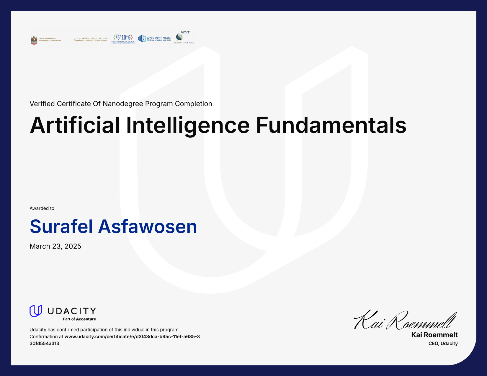
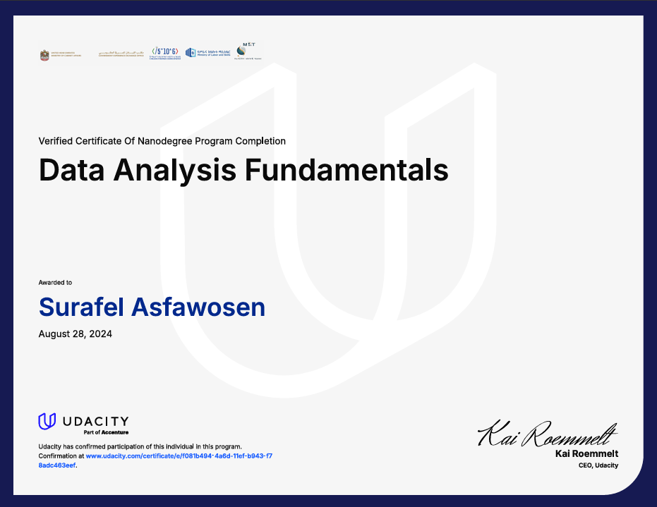
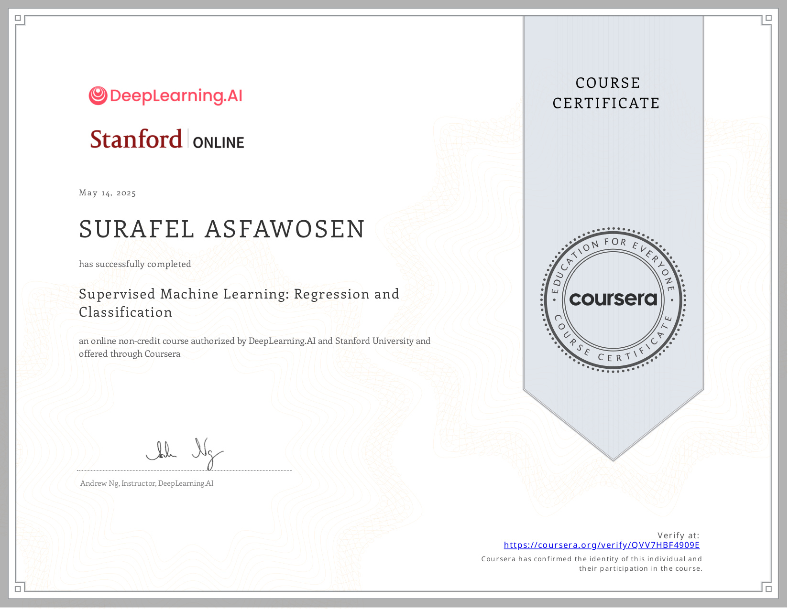

Surafel Asfawosen
"Summoning truth from the void. Without us, all would be whispers in the dark."
01. About Me
I am a Data Scientist pursuing my B.Sc. at Debre Berhan University (Expected 2026), with a deep passion for building robust data pipelines, interactive dashboards, and advanced machine learning models.
I thrive at the intersection of business intelligence and predictive modeling. My work at the Commercial Bank of Ethiopia (CBE) and my focus on high-impact public health analytics (in alignment with goals established by organizations like EPHI) has equipped me with the skills to translate complex, messy data into actionable insights and strategic advantages.
Whether it's deploying Graph Convolutional Networks for environmental monitoring or engineering ETL pipelines with PySpark, my goal is to deliver value through precise, robust data architecture.
Education
Debre Berhan University
B.Sc. in Data Science (Exp. 2026)
Core Focus
- Machine Learning & AI
- Big Data (PySpark, DuckDB)
- Advanced Visualizations
02. Experience
Data Scientist Intern
- Developed a comprehensive Power BI dashboard to monitor bank transactions and analyze customer trends.
- Cleaned financial data, selected key performance indicators, and created dynamic visual reports enabling branch-level analysis.
- Evaluated ATM performance using Clustering models based on transaction frequency and volume over time to optimize cash loading and maintenance schedules.
- Conducted sentiment analysis on customer feedback extracted from Facebook and the Play Store to drive product improvement insights.
Public Health Data Analyst
- Designed an interactive Power BI dashboard analyzing global TB trends (1990-2013) with a 2024 forecasting update.
- Implemented rigorous data cleaning and imputation strategies (mean/mode) for missing values in global health datasets.
- Built dynamic KPIs and 10-year forecasting models to support health planning and strategic storytelling.
03. Featured Projects
Ethio-Telecom Anomaly Detection
An advanced, two-stage Hybrid Machine Learning architecture (Random Forest + Isolation Forest) designed to protect Ethiopian critical infrastructure (Ethio Telecom/Telebirr) from Zero-Day cyber attacks.
Ethiopia Soil Erosion Predictor AI
Development of an AI-based topological research project leveraging Semi-Supervised Graph Convolutional Networks (GCN) to predict and map soil erosion vulnerability.
TB Power BI Dashboard
Interactive dashboard visualizing global TB data by year, country, and metrics. Built to explore data storytelling and visualization for public health planning.
Advanced ETL Pipeline
Scalable extraction & transformation pipeline using PySpark, integrated with DuckDB for fast in‑process analytics. Handles diverse data sources.
04. Core Skills
05. Certifications
Professional qualifications and coursework backing my expertise.

Intro to Artificial Intelligence
Udacity

Data Analysis Fundamentals
Udacity

Supervised ML: Regression & Classification
Coursera